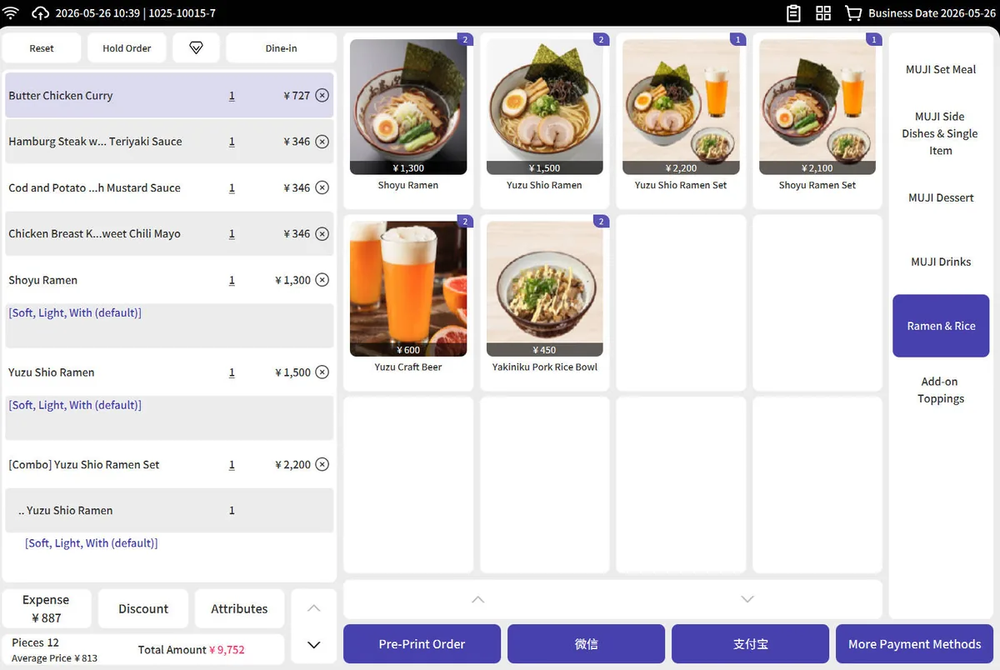
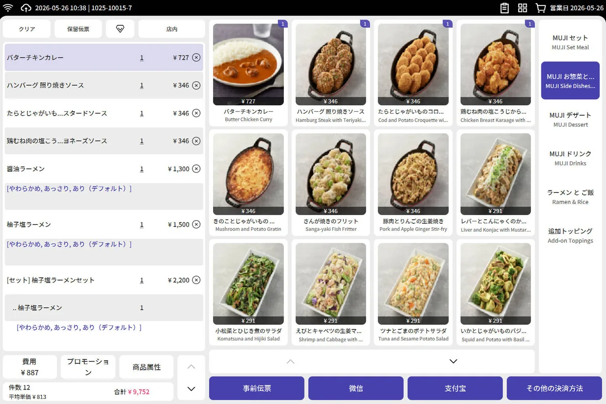
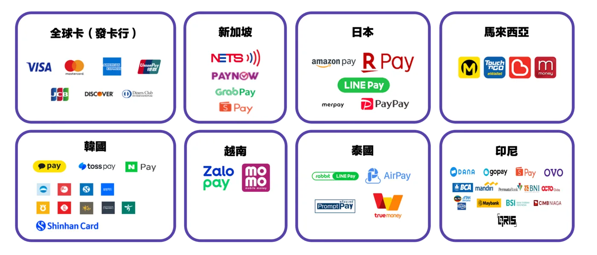
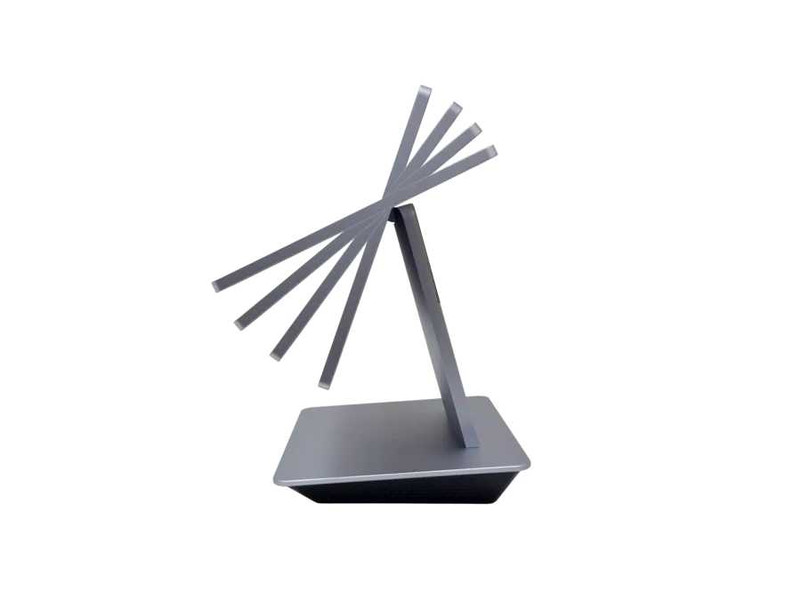
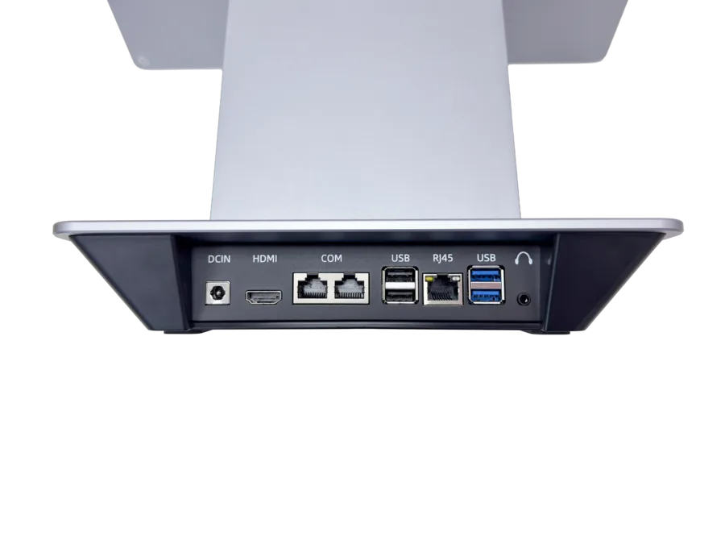
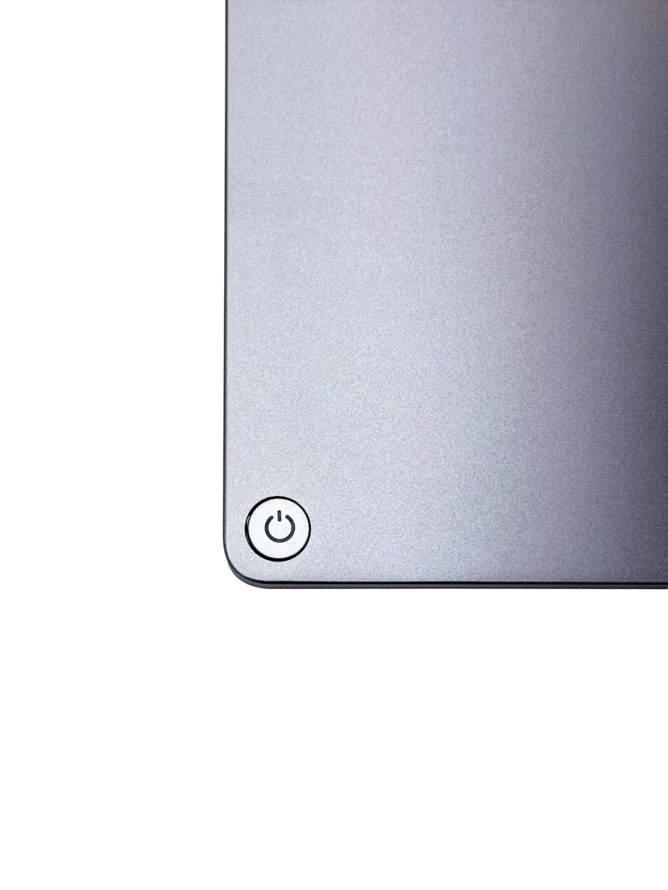
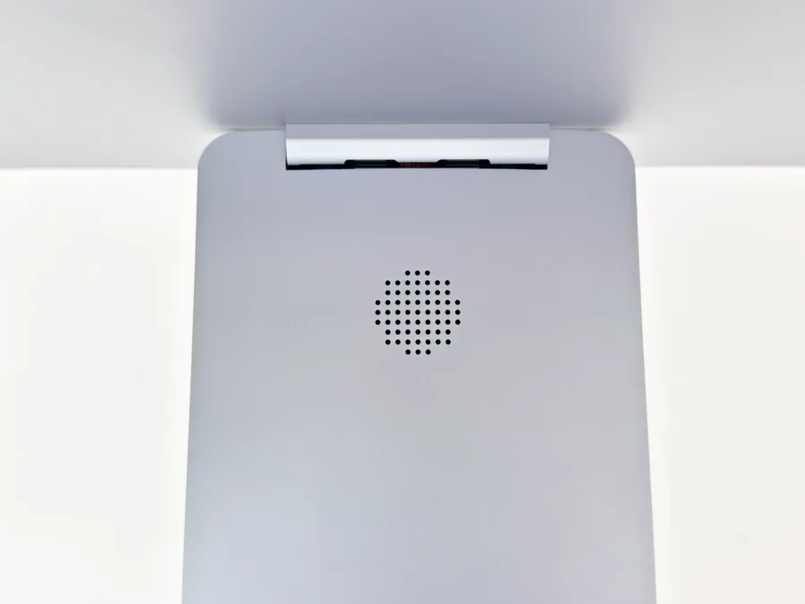
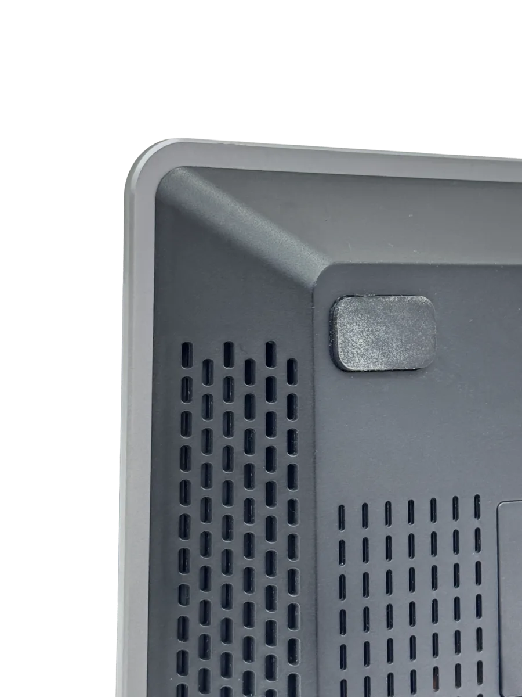

autopos · 全球雲端收銀生態系
跨國佈局，別讓系統成了你的絆腳石。
當分店橫跨多國，您不只面臨稅制混亂與數據破碎——更需對抗油煙潑灑等餐飲現場的硬體耗損。autopos 以 IP54 工業級軟硬整合生態，讓總部秒級掌控每一間分店的即時營運狀態，保護您的數位資產。
現有架構
TW
US
JP
SG
MY
TH
各國系統各自為政
autopos 統一中控
TW
US
JP
SG
MY
TH
單一平台，全球一致
賦能連鎖品牌，實現全球一致化運作。
| 核心維度 | autopos 解決方案 | 對應營運價值 |
|---|---|---|
| 稅務與合規 | 內建全球多國稅制與財稅合規引擎 | 降低法規風險，展店速度快 2 倍 |
| 系統穩定性 | IP54 工業級防護，斷網不斷帳 | 零停機 · 抗油煙 · 延長設備壽命 |
| 數據透明度 | 全球營運儀表板，AI Insight 即時分析 | 總部秒級掌握各國門店獲利狀態 |
| 模組化 SI 服務 | 立式/桌式 KIOSK 彈性配置，一站式軟硬交付 | 終結軟硬廠商互踢問題，縮短導入週期 |
系統介面原生支援多語系，雙語無痛切換。
無論面對英語或日語市場，autopos 後台介面均可一鍵切換語系，操作習慣零重學。這是市面上多數 POS 系統尚未具備的核心競爭力，讓您的跨國擴張從第一天就無摩擦落地。

English 介面
雙語切換示意
日本語 介面
合作外送平台
支援支付方式

不只是 POS，更是您的一站式軟硬整合夥伴。
autopos 以深度 SI 整合，終結軟體商與硬體商互踢問題的困境。從 IP54 工業級終端到雲端管理後台，由同一團隊統一交付、統一負責，讓品牌專注於成長，而非設備糾紛。
了解 autopos →從 autopos 軟體，到為現場而生的硬體。
硬體設備 · 軟硬整合一站交付
為餐飲現場而生的耐用終端。
autopos ONE · 專業級 POS 終端
旗艦工業設計，與 autopos 雲端完美整合。


拖曳旋轉 360°
每一處細節，都是工程師的堅持。

無段式角度調整
螢幕最大仰角 45°，無段微調，適應每種收銀場景。

全接口底座
底座整合所有連接埠，保持桌面整潔，快速部署。

精工電源鍵
仿精品設計語言，單鍵操作，質感升級。

隱藏式喇叭
音源內嵌螢幕支架，外觀精簡幹練不卡灰塵。

主動導流散熱
主動式散熱設計，高溫環境不熱當。
- 主流 x86 效能 × Windows 系統 — Intel N95 處理器搭配 8G 記憶體 + 128G SSD、Win 10/11，軟體相容性高，收銀、會員、線上單多視窗同時跑也不卡頓，不必擔心未來的擴充與相容性限制。
- 15.6 吋 Full HD IPS 多點觸控 — 1920×1080 IPS 面板 G+G 多點觸控電容螢幕，字大清晰、廣視角、觸控靈敏，店員零學習門檻、尖峰時段無障礙。
- 雙頻 WiFi + Gigabit + 藍牙 5.3 完整連網 — 2.4G/5G 雙頻 WiFi、10/100/1000M 有線網路、BT5.3 三路齊備，連線穩定、可有線無線互備，藍牙周邊一次配對到位。
- 豐富外接介面，一台串起全部周邊 — HDMI×1、COM×2、USB2.0×2、USB3.0×2、RJ45、音源孔，客顯、出單機、錢箱、掃碼槍、刷卡機一次接齊，不必外掛轉接器。
- 商用級耐用機構 — 金屬＋塑鋼機身、3W 喇叭、12V/4A 供電、工作溫度 −10~45℃、通過 CCC 認證，耐得住餐飲油煙與長時間營業；機身僅 363×321×191mm，占桌面小。